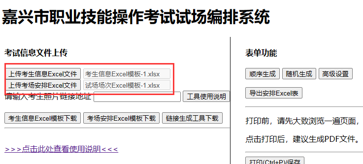

试场编排系统使用简要说明
-
首先，下载“考场安排Excel模板”，根据Excel表格的模板，填写考点考场的规格信息（如有几个考场，可容纳多少人数）。
图例如下
-
然后，下载“考生信息Excel模板”，填写学生的准考证号（考生号）、姓名等信息，根据考生的报考类别，关联到考场安排的编号。
图例如下
-
若按照上述图例中的话，那么所有 06 类别的考生（考生信息模板中的），都可以分配到 06 类别的考场（考场安排模板中的）。
上面 06 的考场安排了两个时段（上午、下午），那么可以选择随机分配的上述时段。上午时段3个试场，每个试场10人，那么当分配满了之后，剩余考生将会分配到下午的考场中。
这样子可以做到，多场次同时进行安排。
“试场号”这个字段，是用于手动指定某个试场的编号。如果留空，那么系统将自动顺序编号。如果需要指定，那么试场数需要指定为 1。
-
当仅只安排一个考点时，可以不填写考点代码，直接填写考点名称即可。如果有多个考点，那么需要填写考点代码（否则学生将无法确定安排至哪个考点）。
-
当Excel填写完之后，在网页上上传即可。

-
两个文件上传完毕后，点击右侧的“顺序生成”或者“随机生成”。
顺序生成是按照考生信息表格中的顺序，依次分配到对应类别的考场中，不打乱。随机生成是随机分配，会进行打乱。
-
核对单列表
样例如图。可以自行将不需要显示的字段隐藏（如隐藏性别、证件号等）。可以调整每行的数量（不过一般不需要改动）。
-
准考证列表(单张)
样例如图。这里是每个考生单张准考证。可以设置不显示照片的格式。在表格下方可以自定义相关提醒事项等内容。留空则不显示。

-
生成完毕后，有多种类型的表格可供打印或者另存为。推荐的方式是：在打印预览页面，选择“另存为PDF”，将相关文件保存至本地，后续可以重复打印（防止每次随机生成导致数据前后不一致）。
-
当生成完毕后，可以将数据导出，以便后续数据处理，或者重新编排相同的信息。